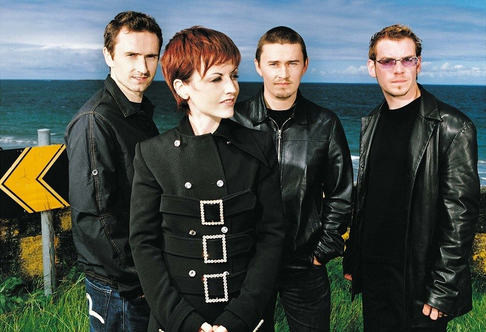
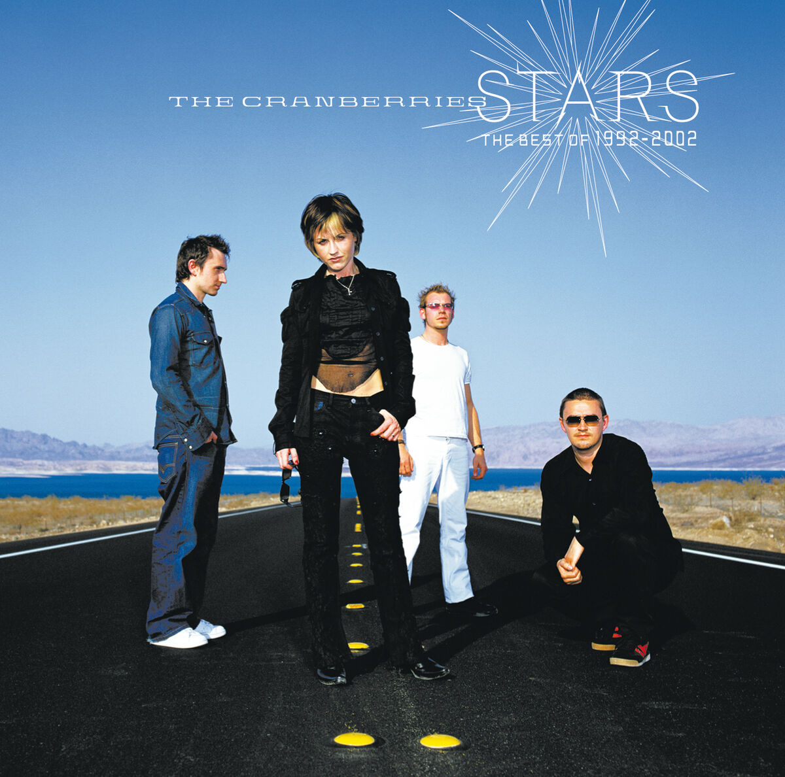

The Cranberries



The Cranberries were an Irish rock band formed in Limerick in 1989. The band was composed of lead vocalist/guitarist Dolores O'Riordan, guitarist Noel Hogan, bassist Mike Hogan (Noel's brother) and drummer Fergal Lawler; O'Riordan replaced founding member Niall Quinn in 1990. The band classified themselves as an alternative rock group, but their sound blended elements of indie rock, jangle pop, dream pop, folk rock, post-punk, and pop rock.
The band, originally named The Cranberry Saw Us, was renamed after the addition of O'Riordan. They achieved international fame with their debut album, Everybody Else Is Doing It, So Why Can't We? (1993), which produced the hit singles "Dreams" and "Linger". This success was continued with their second album, No Need to Argue (1994), whose single "Zombie" became a stadium anthem and the band's signature song. The band issued two more albums, To the Faithful Departed (1996) and Bury the Hatchet (1999), to similar success.
The Cranberries's fifth album, Wake Up and Smell the Coffee (2001), did not meet the success of their preceding albums. Following a six-year hiatus from 2003 to 2009, the Cranberries embarked on a North American tour that was followed by shows in Latin America and Europe. Eleven years after Wake Up and Smell the Coffee, they released their sixth album, Roses (2012). They expanded their musical style with their seventh album, Something Else (2017). After O'Riordan's death in 2018, the remaining members released their acclaimed final album, In the End (2019), and disbanded.
The Cranberries were one of the best-selling alternative acts of the 1990s, having sold nearly 50 million albums worldwide as of 2019. Their accolades included an Ivor Novello Award, a Juno Award, an MTV Europe Music Award and a World Music Award, in addition to nominations for a Brit Award and a Grammy Award. The music video for "Zombie" is the first by an Irish band to reach one billion views on YouTube.
| Year | Album |
|---|---|
| 1993 | Everybody Else Is Doing It, So Why Can't We? |
| 1994 | No Need to Argue |
| 1996 | To the Faithful Departed |
| 1999 | Bury the Hatchet |
| 2001 | Wake Up and Smell the Coffee |
| 2012 | Roses |
| 2019 | In the End |
| Year | Popular Song |
|---|---|
| 1993 | Linger |
| 1994 | Zombie 💎 1B views |
| 1996 | Salvation |